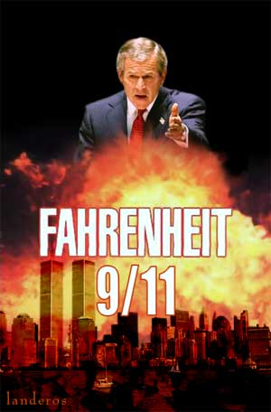

Fahrenheit 9/11: Michael Moore's Candid Camera
When you have a story this ugly and this powerful to tell, subtleties and fine distinctions are unnecessary.
- - - - - - - - - -
by Frank Rich
"But why should we hear about body bags, and deaths, and how many, what day it's gonna happen, and how many this or what do you suppose? Or, I mean, it's, it's not relevant. So why should I waste my beautiful mind on something like that? And watch him suffer."
- Barbara Bush on "Good Morning America," March 18, 2003
HE NEEDN'T HAVE WORRIED. Her son wasn't suffering. In one of the several pieces of startling video exhibited for the first time in Michael Moore's "Fahrenheit 9/11," we catch a candid glimpse of President Bush some 36 hours after his mother's breakfast TV interview -- minutes before he makes his own prime-time TV address to take the nation to war in Iraq. He is sitting at his desk in the Oval Office. A makeup woman is doing his face. And Mr. Bush is having a high old time. He darts his eyes about and grins, as if he were playing a peek-a-boo game with someone just off-camera. He could be a teenager goofing with his buds to relieve the passing tedium of a haircut.
"In your wildest dreams you couldn't imagine Franklin Roosevelt behaving this way 30 seconds before declaring war, with grave decisions and their consequences at stake," said Mr. Moore in an interview before his new documentary's premiere at Cannes last Monday. "But that may be giving him credit for thinking that the decisions were grave." As we spoke, the consequences of those decisions kept coming. The premiere of "Fahrenheit 9/11" took place as news spread of the assassination of a widely admired post-Saddam Iraqi leader, Ezzedine Salim, blown up by a suicide bomber just a hundred yards from the entrance to America's "safe" headquarters, the Green Zone, in Baghdad.
"Fahrenheit 9/11" will arrive soon enough at your local cineplex -- there's lots of money to be made -- so discount much of the squabbling en route. Disney hasn't succeeded in censoring Mr. Moore so much as in enhancing his stature as a master provocateur and self-promoter. And the White House, which likewise hasn't a prayer of stopping this film, may yet fan the p.r. flames. "It's so outrageously false, it's not even worth comment," was last week's blustery opening salvo by Dan Bartlett, the White House communications director. New York's Daily News reported that Republican officials might even try to use the Federal Election Commission to shut the film down. That would be the best thing to happen to Michael Moore since Charlton Heston granted him an interview.
Whatever you think of Mr. Moore, there's no question he's detonating dynamite here. From a variety of sources -- foreign journalists and broadcasters (like Britain's Channel Four), freelancers and sympathetic American TV workers who slipped him illicit video -- he supplies war-time pictures that have been largely shielded from our view. Instead of recycling images of the planes hitting the World Trade Center on 9/11 once again, Mr. Moore can revel in extended new close-ups of the president continuing to read "My Pet Goat" to elementary school students in Florida for nearly seven long minutes after learning of the attack. Just when Abu Ghraib and the savage beheading of Nicholas Berg make us think we've seen it all, here is yet another major escalation in the nation-jolting images that have become the battleground for the war about the war.
"Fahrenheit 9/11" is not the movie Moore watchers, fans or foes, were expecting. (If it were, the foes would find it easier to ignore.) When he first announced this project last year after his boorish Oscar-night diatribe against Mr. Bush, he described it as an exposé of the connections between the Bush and bin Laden dynasties. But that story has been so strenuously told elsewhere -- most notably in Craig Unger's best seller, "House of Bush, House of Saud" -- that it's no longer news. Mr. Moore settles for a brisk recap in the first of his film's two hours. And, predictably, he stirs it into an over-the-top, at times tendentious replay of a Bush hater's greatest hits: Katherine Harris, the Supreme Court, Harken Energy, AWOL in Alabama, the Carlyle Group, Halliburton, the lazy Crawford vacation of August 2001, the Patriot Act. But then the movie veers off in another direction entirely. Mr. Moore takes the same hairpin turn the country has over the past 14 months and crash-lands into the gripping story that is unfolding in real time right now.
Wasn't it just weeks ago that we were debating whether we should see the coffins of the American dead and whether Ted Koppel should read their names on "Nightline"? In "Fahrenheit 9/11," we see the actual dying, of American troops and Iraqi civilians alike, with all the ripped flesh and spilled guts that the violence of war entails. (If Steven Spielberg can simulate World War II carnage in "Saving Private Ryan," it's hard to argue that Mr. Moore should shy away from the reality in a present-day war.) We also see some of the 4,000-plus American casualties: those troops hidden away in clinics at Walter Reed and at Blanchfield Army Community Hospital in Fort Campbell, Ky., where they try to cope with nerve damage and multiple severed limbs. They are not silent. They talk about their pain and their morphine, and they talk about betrayal. "I was a Republican for quite a few years," one soldier says with an almost innocent air of bafflement, "and for some reason they conduct business in a very dishonest way."
Of course, Mr. Moore is being selective in what he chooses to include in his movie; he's a polemicist, not a journalist. But he implicitly raises the issue that much of what we've seen elsewhere during this war, often under the label of "news," has been just as subjectively edited. Perhaps the most damning sequence in "Fahrenheit 9/11" is the one showing American troops as they ridicule hooded detainees in a holding pen near Samara, Iraq, in December 2003. A male soldier touches the erection of a prisoner lying on a stretcher underneath a blanket, an intimation of the sexual humiliations that were happening at Abu Ghraib at that same time. Besides adding further corroboration to Seymour Hersh's report that the top command has sanctioned a culture of abuse not confined to a single prison or a single company or seven guards, this video raises another question: why didn't we see any of this on American TV before "60 Minutes II"?
Don Van Natta Jr. of The New York Times reported in March 2003 that we were using hooding and other inhumane techniques at C.I.A. interrogation centers in Afghanistan and elsewhere. CNN reported on Jan. 20, after the Army quietly announced its criminal investigation into prison abuses, that "U.S. soldiers reportedly posed for photographs with partially unclothed Iraqi prisoners." And there the matter stood for months, even though, as we know now, soldiers' relatives with knowledge of these incidents were repeatedly trying to alert Congress and news organizations to the full panorama of the story.
Mr. Moore says he obtained his video from an independent foreign journalist embedded with the Americans. "We've had this footage in our possession for two months," he says. "I saw it before any of the Abu Ghraib news broke. I think it's pretty embarrassing that a guy like me with a high school education and with no training in journalism can do this. What the hell is going on here? It's pathetic."
We already know that politicians in denial will dismiss the abuse sequence in Mr. Moore's film as mere partisanship. Someone will surely echo Senator James Inhofe's Abu Ghraib complaint that "humanitarian do-gooders" looking for human rights violations are maligning "our troops, our heroes" as they continue to fight and die. But Senator Inhofe and his colleagues might ask how much they are honoring soldiers who are overextended, undermanned and bereft of a coherent plan in Iraq. Last weekend The Los Angeles Times reported that for the first time three Army divisions, more than a third of its combat troops, are so depleted of equipment and skills that they are classified "unfit to fight." In contrast to Washington's neglect, much of "Fahrenheit 9/11" turns out to be a patriotic celebration of the heroic American troops who have been fighting and dying under these and other deplorable conditions since President Bush's declaration of war.
In particular, the movie's second hour is carried by the wrenching story of Lila Lipscomb, a flag-waving, self-described "conservative Democrat" from Mr. Moore's hometown of Flint, Mich., whose son, Sgt. Michael Pedersen, was killed in Iraq. We watch Mrs. Lipscomb, who by her own account "always hated" antiwar protesters, come undone with grief and rage. As her extended family gathers around her in the living room, she clutches her son's last letter home and reads it aloud, her shaking voice and hand contrasting with his precise handwriting on lined notebook paper. A good son, Sergeant Pedersen thanks his mother for sending "the bible and books and candy," but not before writing of the president: "He got us out here for nothing whatsoever. I am so furious right now, Mama."
By this point, Mr. Moore's jokes, some of them sub-par retreads of Jon Stewart's riffs about the coalition of the willing, have vanished from "Fahrenheit 9/11." So, pretty much, has Michael Moore himself. He told me that Harvey Weinstein of Miramax had wanted him to insert more of himself into the film -- "you're the star they're coming to see" -- but for once he exercised self-control, getting out of the way of a story that is bigger than he is. "It doesn't need me running around with my exclamation points," he said. He can't resist underlining one moral at the end, but by then the audience, crushed by the needlessness of Mrs. Lipscomb's loss, is ready to listen. Speaking of America's volunteer army, Mr. Moore concludes: "They serve so that we don't have to. They offer to give up their lives so that we can be free. It is, remarkably, their gift to us. And all they ask for in return is that we never send them into harm's way unless it is absolutely necessary. Will they ever trust us again?"
"Fahrenheit 9/11" doesn't push any Vietnam analogies, but you may find one in a montage at the start, in which a number of administration luminaries (Cheney, Rice, Ashcroft, Powell) in addition to the president are seen being made up for TV appearances. It's reminiscent of Richard Avedon's photographic portrait of the Mission Council, the American diplomats and military figures running the war in Saigon in 1971. But at least those subjects were dignified. In Mr. Moore's candid-camera portraits, a particularly unappetizing spectacle is provided by Paul Wolfowitz, the architect of both the administration's Iraqi fixation and its doctrine of "preventive" war. We watch him stick his comb in his mouth until it is wet with spit, after which he runs it through his hair. This is not the image we usually see of the deputy defense secretary, who has been ritualistically presented in the press as the most refined of intellectuals -- a guy with, as Barbara Bush would have it, a beautiful mind.
Like Mrs. Bush, Mr. Wolfowitz hasn't let that mind be overly sullied by body bags and such -- to the point where he underestimated the number of American deaths in Iraq by more than 200 in public last month. No one would ever accuse Michael Moore of having a beautiful mind. Subtleties and fine distinctions are not his thing. That matters very little, it turns out, when you have a story this ugly and this powerful to tell.
Reprinted from The New York Times

|